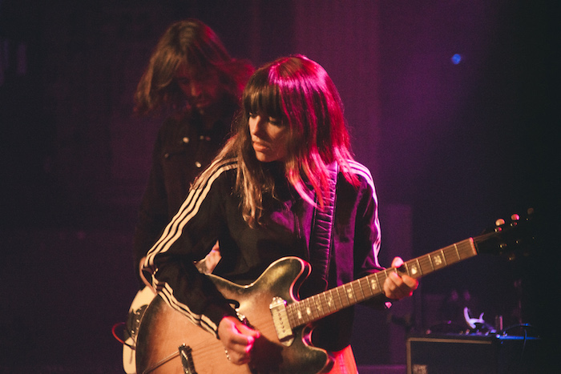

I hate doing things I'm bad at.
I go through long periods of not being able to write. I type and it doesn't sound natural, or it doesn't sound like it did in my head three hours ago when I had the sudden strike of motivation. I'll listen to my favorite song and get excited until I make a flat, uninspired drum beat which leads to me closing Ableton and not returning for a week. I go out with friends and feel great until I'm hit with the fear of having to pretend like I'm actually enjoying myself while “Stacy's Mom” is played for the fifth week in a row at some shitty college bar.
Should you ever expect to surpass what inspires you? And when inspiration is so fleeting how much do I have to force? If I force myself to write and hate everything that comes out, how much of that is progress?
I've felt very stagnant since returning from overseas. As much as I don't want to be “that kid that won't stop talking about his semester abroad,” it has caused me to feel a certain level of disconnect with a lot of things that were before natural. There's so much I want out of life, but I have no idea how to achieve it, and it leads to this vicious cycle of frustration and confusion.
In an attempt to break out of this feeling about a month ago I made a conscious effort to stop listening to hip hop when I was outside of work. Not that I have anything wrong with the genre, but it was just consuming so much of what was on my radar. It seemed like everyone was just imitating each other, (at least in the circle of what I was listening to) and I wasn't feeling the same level of excitement as when I was at my peak interest with the SoundCloud wave.

I found the band Hop Along while listening to the Spotify radio for Built To Spill. The song was “Sister Cities” and I remember being completely taken aback by Frances Quinlan's incredibly unique, raspy screams near the end of the track. I went home and immediately dug through all three albums falling in love with the unpredictable song arrangements and story-telling lyrical approach.
Frances' voice is nowhere near safe or natural, but I found so much comfort in it. At a time where I was feeling uninspired by my current musical tastes, I came across a band that sounded as if it was catered directly for my ears.
In “How Simple,” the opening track of their 2018 record, Frances repeatedly shouts the phrase “don't worry, we will both find out, just not together,” which is exactly what I needed to hear. Personally I interpret it as closure. Not just in a sense of romance where we usually talk about closure, but with everything, whether it's friends, thoughts, strangers, places. To me it captures this beautiful idea of everything moving on and accomplishing a purpose, but still being affected by everything that thing or person has ever encountered.
Finding a way to be fulfilled with one-off encounters can be incredibly difficult for me. I have a habit of holding onto everything that I feel helped to shape me. I want everything I do to be meaningful and impactful, but I feel that can be a problematic mindset to have when trying to improve on something.
So that's what led to this, and my new goal of forcing myself to make mediocre attempts at the things I love, move on, and do them better next time.